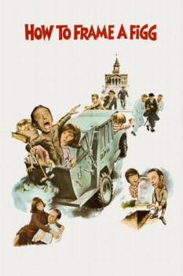

Country:United States, 103 minutes
Spoken languages:English
Genres:Comedy, Family
Director(s):Alan Rafkin
Writer(s):
Video Codec:Unknown
Number: 1600

Certification:G
Storyline:
Don Knotts is Hollis Figg, the dumbest bookkeeper in town. When the city fathers buy a second-hand computer to cover up their financial shenanigans, they promote Figg to look after things, knowing he'll never catch on. Their plan backfires when Figg becomes self-important and accidentally discovers their plot.
Cast:
Don Knotts (as Hollis Alexander Figg), Elaine Joyce (as Ema Letha Kusic), Joe Flynn (as Kermit Sanderson), Edward Andrews (as Mayor Robert Chisholm), Frank Welker (as Prentiss Gates)
Medium: Media file,
Location: D:\Disney\Don Knotts\How to Frame a Figg(1971).mp4
Loaned: No
Aspect ratio: Unknown